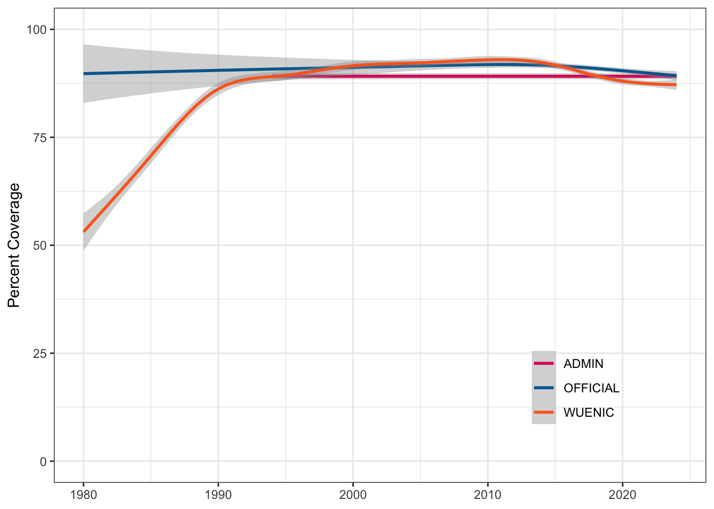
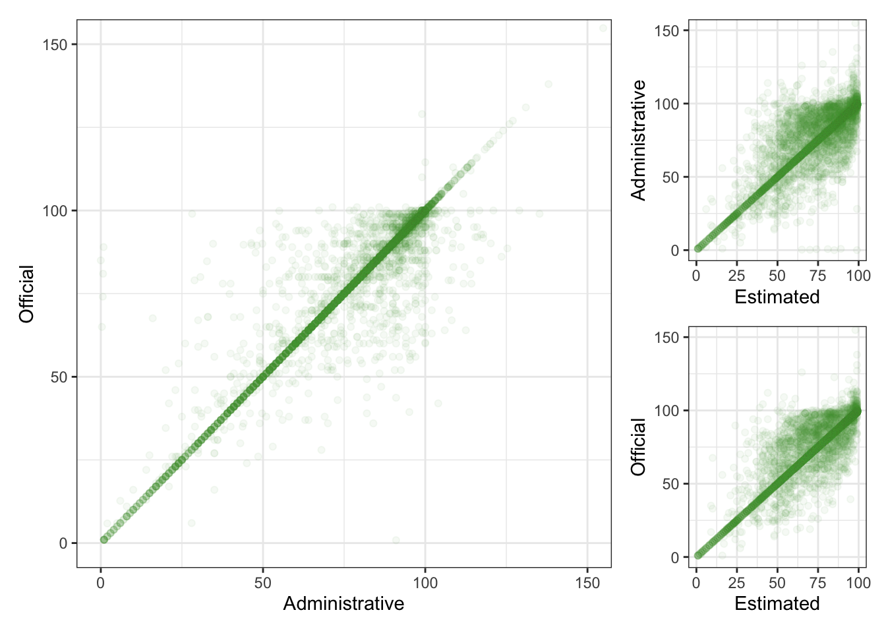

3 Good Health and Well-Being

Ensure healthy lives and promote well-being for all at all ages
3.1 Original Data
Source: WHO/UNICEF Estimates of National Immunization Coverage (WUENIC), 2023 Revision (completed 15 July 2025), data from 1980-2024.
Downloaded data for all countries and all antigens, from 1980 to 2024 for measles and rubella on 2025-08-07.
You can download more data about coverage of other vaccinations at immunizationdata.who.int.
Codebook
- GROUP: All “COUNTRIES”
- CODE: 3-letter ISO country code
- NAME: Country name
- YEAR: 1980-2024
- ANTIGEN: “MCV1”, “MCV2”, or “RCV1”
- ANTIGEN_DESCRIPTION: Longer description of ANTIGEN
- COVERAGE_CATEGORY: “ADMIN”, “OFFICIAL” or “WUENIC”
- COVERAGE_CATEGORY_DESCRIPTION: Longer description of COVERAGE_CATEGORY
- TARGET_NUMBER: Number of infants in the target population
- DOSES: How many doses were administered
- COVERAGE: The percentage in the target population who have received one (RCV1, MCV1) or two (MCV2) doses of antigen-containing vaccine in a given year.
Plot Code
ggplot(rubella, aes(x = YEAR, y = COVERAGE, colour = COVERAGE_CATEGORY)) +
geom_smooth() +
scale_color_manual(values = c("#DD1367", "#00689D", "#FD6925"),
guide = guide_legend(position = "inside")) +
coord_cartesian(ylim = c(0, 100)) +
labs(x = NULL, color = NULL, y = "Percent Coverage") +
theme(legend.position.inside = c(.8, .2),
legend.background = element_blank())

3.2 Simplified Subsets
3.2.1 Coverage
Coverage categories are Administrative, Official, or WHO/UNICEF Estimates (wuenic). This set removes redundant columns and simplifies the column names, making them easier to join to data such as that in Chapter 1.
Code to create measles_coverage and rubella_coverage
measles_coverage <- measles |>
select(country_code = CODE,
country_name = NAME,
year = YEAR,
antigen = ANTIGEN,
coverage = COVERAGE,
cat = COVERAGE_CATEGORY) |>
mutate(cat = tolower(cat)) |>
pivot_wider(names_from = cat, values_from = coverage)
rubella_coverage <- rubella |>
select(country_code = CODE,
country_name = NAME,
year = YEAR,
antigen = ANTIGEN,
coverage = COVERAGE,
cat = COVERAGE_CATEGORY) |>
mutate(cat = tolower(cat)) |>
pivot_wider(names_from = cat, values_from = coverage)These data sets are good for practicing data merging and dealing with missing data.
| country_code | country_name | year | antigen | admin | official | wuenic |
|---|---|---|---|---|---|---|
| AFG | Afghanistan | 2024 | MCV2 | 61.73 | 62.00 | 44 |
| AFG | Afghanistan | 2024 | MCV1 | 78.26 | 78.00 | 55 |
| ALB | Albania | 2024 | MCV1 | 80.73 | 80.73 | 81 |
| ALB | Albania | 2024 | MCV2 | 91.82 | 91.82 | 92 |
| DZA | Algeria | 2024 | MCV1 | 93.91 | NA | 94 |
| DZA | Algeria | 2024 | MCV2 | 90.25 | NA | 90 |
Plot Code
geom <- geom_point(alpha = 0.05, na.rm = TRUE, color = "#4C9F38")
mcv1 <- filter(measles_coverage, antigen == "MCV1")
ao <- ggplot(mcv1, aes(x = admin, y = official)) +
geom +
coord_cartesian(xlim = c(0, 150), ylim = c(0, 150)) +
labs(x = "Administrative",
y = "Official")
aw <- ggplot(mcv1, aes(x = wuenic, y = admin)) +
geom +
coord_cartesian(xlim = c(0, 100), ylim = c(0, 150)) +
labs(x = "Estimated",
y = "Administrative")
ow <- ggplot(mcv1, aes(x = wuenic, y = official)) +
geom +
coord_cartesian(xlim = c(0, 100), ylim = c(0, 150)) +
labs(x = "Estimated",
y = "Official")
design <- "
1112
1112
1113
1113
"
ao + aw + ow + plot_layout(design = design)
